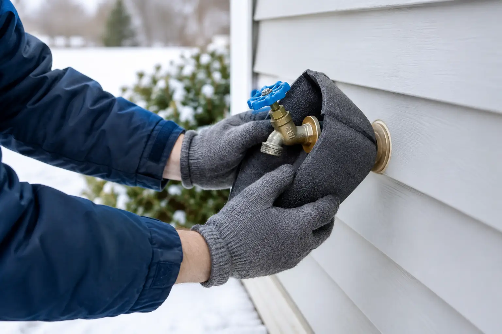

How to Winterize Outdoor Water Taps Before Freeze
By Vitalii Nestorenko · October 26, 2026 · 7 min read
A sudden Calgary cold snap can turn one forgotten hose connection into a burst pipe, damaged drywall, and an avoidable repair bill. Taking time to winterize outdoor water taps is one of the simplest fall maintenance jobs you can do, but the details matter. A tap that looks protected from the outside may still hold water in the pipe behind the wall.
The goal is straightforward: shut off the water supply to each exterior tap, drain the remaining water, and make sure nothing outside can trap water against the fixture. Done properly, this helps protect your plumbing through freeze-thaw cycles and long stretches of sub-zero weather.
When to winterize outdoor water taps in Calgary
Aim to finish the job before overnight temperatures regularly fall below 0 C. In Calgary, that often means dealing with exterior taps in early to mid-fall, rather than waiting for the first serious freeze warning. The right date changes every year, but waiting until snow is on the ground is usually waiting too long.
If the forecast calls for an unexpected hard freeze and you have not prepared yet, disconnect hoses immediately. That single step will not replace a full winterization, but it removes one common source of trapped water and gives you time to finish the job properly.
Homes with a heated garage, a south-facing wall, or newer frost-free taps still need attention. Exposure, insulation, the location of the shutoff valve, and whether a hose is attached all affect the risk.
What you need before you start
Most homeowners only need a flashlight, a small bucket or towel, and an insulated outdoor tap cover if they choose to use one. You may also want slip-joint pliers if an old hose connection is stuck, although forcing corroded fittings can create a bigger problem.
Before touching the exterior tap, find the indoor shutoff valve that controls it. It is commonly located in the basement ceiling, utility room, mechanical room, crawlspace, or near the water meter. Some homes have separate shutoffs for the front and rear taps. Others have one valve controlling both. If you cannot identify the correct valve with confidence, do not guess and shut off random plumbing lines.
How to winterize outdoor water taps properly
1. Disconnect every hose and accessory
Remove garden hoses, spray nozzles, splitters, timers, pressure washers, and irrigation connectors. Do not leave a hose attached because it is coiled neatly or stored close to the wall. Even a short hose section can hold water at the tap, prevent drainage, and allow ice to push back into the plumbing.
Drain the hose fully, roll it up, and store it indoors or in a sheltered area. Check the connection point for worn rubber washers, corrosion, or a slow drip while you are there. A leaking exterior tap is much easier to repair before winter than during a freeze.
2. Shut off the interior supply valve
Turn the dedicated indoor shutoff clockwise until it is closed. A quarter-turn ball valve should sit perpendicular to the pipe when closed. A gate-style valve may need several turns.
Do not rely only on turning off the handle outside. The exterior handle stops the water flow at the tap, but it may not drain the pipe inside the wall. The indoor shutoff is what isolates that pipe from your home’s pressurized water supply.
3. Open the outdoor tap and drain it
With the interior valve closed, go outside and open the tap fully. Water should run briefly, then slow to a drip or stop. Leave the exterior tap open for the winter after it drains. This gives any remaining water room to expand rather than building pressure inside a closed section of pipe.
Place a bucket or towel underneath if water is draining onto a finished surface, walkway, or deck. If the tap continues running steadily after a minute or two, the indoor shutoff may not be fully closed, may be faulty, or may not control that tap.
4. Open the indoor bleeder cap, if your valve has one
Many exterior tap shutoff valves have a small bleeder cap or screw on the side. With the outdoor tap open and the supply valve closed, carefully loosen this cap. A small amount of water should drain out. Keep a towel or bucket underneath, especially if the valve is in a finished basement.
Once the water stops, tighten the bleeder cap gently. It only needs to be snug. Over-tightening can damage the small fitting or its washer.
Not every shutoff valve has a bleeder. If yours does not, opening the exterior tap after shutting off the supply is still the correct approach. The pipe layout determines how completely it drains, which is one reason older homes deserve a closer look.
5. Add a cover only after draining
An insulated faucet cover can reduce wind exposure and provide a little extra protection, particularly on older homes or shaded walls. It is not a substitute for shutting off and draining the line. A cover placed over a tap with trapped water may hide the problem without preventing a freeze.
Make sure the cover fits securely without pulling on the tap or leaving a large gap around the wall. Avoid wrapping the fixture in materials that hold moisture against the siding or stucco.
Frost-free taps still need a check
A frost-free tap is designed with the valve seat farther inside the heated part of the building. When the handle is shut off, the exterior portion should drain. That design offers better protection, but only when the tap is installed at the correct downward angle and nothing blocks the drainage path.
The most common mistake is leaving a hose or attachment connected all winter. This can trap water inside the frost-free tap, defeating the feature that makes it frost-resistant. A dripping frost-free tap also needs attention. Constant dripping may mean the internal valve is not sealing, and the water can freeze on the exterior or indicate a worn cartridge.
If you are unsure whether your tap is frost-free, look for a longer body extending through the wall or ask a qualified handyman or plumber during a maintenance visit. It is better to verify than to assume.
Warning signs that need repair before winter
Winterizing is also the right time to spot trouble that should not be ignored. Call for help if the outdoor tap leaks around the handle, drips after being shut off, feels loose where it meets the wall, or shows visible cracking. Watch for water stains, damp insulation, musty smells, or warped materials on the interior wall near the tap as well.
A shutoff valve that will not turn, a bleeder that leaks, or a tap that does not drain after the supply is closed can require repair or replacement. Forcing old valves is risky. A small part can break, and what began as preventative maintenance can become an urgent indoor water shutoff situation.
Rental owners should also check exterior taps between tenants. Hoses are often left connected, and an empty property may not reveal a frozen-pipe problem until significant water damage has already occurred. Documenting fall maintenance is a practical habit for any landlord.
Common mistakes to avoid
Do not use an open flame, heat gun, or improvised electrical heater near a frozen tap or wall cavity. If a pipe has already frozen, heat should be applied cautiously and only when you know the pipe has not cracked. Water pressure behind ice can split a pipe, and thawing can reveal a leak quickly.
Do not pack soil, snow, or wet rags around the tap for insulation. These materials can hold moisture against exterior finishes and do little to protect the plumbing behind the wall. Also avoid turning the house thermostat down too far when you travel. Exterior plumbing relies partly on heat from inside the home.
Finally, do not forget secondary water connections. Garage taps, outdoor kitchen lines, irrigation backflow devices, and taps in unheated sheds may need separate winterization. Their shutoffs may be in a different location from the main exterior tap valves.
When it makes sense to call a handyman
This is a manageable job when the shutoffs are easy to identify and everything works as it should. It makes sense to call for help when you cannot find the valves, the tap leaks, a pipe has poor access, or several small fall maintenance jobs need attention at once.
For homeowners in Calgary, Airdrie, Okotoks, and Cochrane, Nestor’s Home Help can inspect exterior taps, address minor repairs, and help prepare the parts of your home that winter exposes first. Careful work now is usually quicker, cleaner, and far less stressful than dealing with a burst pipe in January.
Before the temperature drops tonight, take one walk around your home: disconnect the hoses, check each tap, and make sure every outdoor water line has a clear plan for winter.
Vitalii Nestorenko is the owner of Nestor's Home Help, a licensed and insured handyman business in Calgary. He holds a Master's degree in mechanical engineering and does every job himself.